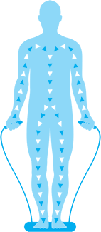
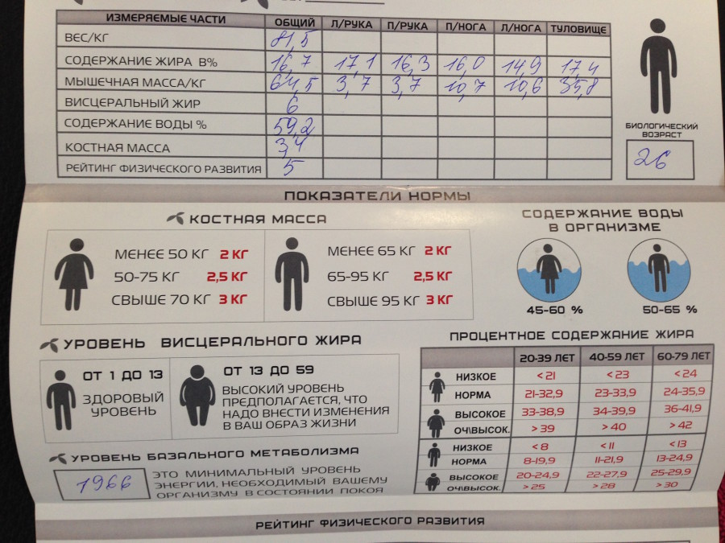
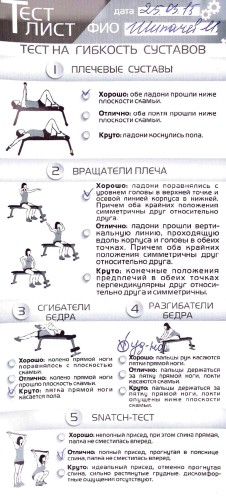

В спортзал я хожу уже около 2,5 лет. Первый год занимался с тренером, потом, усвоив азы, решил тренироваться самостоятельно. Экономлю деньги и полагаюсь только на себя.
В «Малибу», куда я хожу уже месяцев 8 существует программа диагностики клиентов. О существовании этой программы я, правда, узнал пару недель назад, когда её стали рекламировать, предлагая скидку в 50%. Обычная стоимость — 400 рублей.
Программа заключается в исследовании состава тела, тестировании гибкости и подвижности суставов, теста на правильность осанки и замеров пульса в 3-х состояниях.
Слабые свои места я, в общем-то, знал, но хотелось зафиксировать их в цифрах, и на этой неделе диагностику я прошёл.
Тестирование, похоже, возможно только для клиентов клуба и на него необходимо записываться заранее. Занимает порядка 25-30 минут. Проводить нужно до тренировки.

Начинается с исследования состава тела. Наука давно шагнула вперёд, и уже десятки лет как отпала необходимость доставать скальпель, чтобы понять, сколько жира в вашем теле, а сколько мышц.
Процедура исследования тела на специальных весах «Танита» занимает секунд 30. Вы встаёте босыми ногами на такие весы и берёте в руки специальные ручки, в которых, как и в самих весах, есть специальные электроды. Электрический ток (слабой мощности) быстро проходит через воду, содержащуюся в гидратируемой мышечной ткани, но встречает сопротивление в жировой ткани. Это сопротивление, также известное как «импеданс», измеряется и вводится в научно утверждённые уравнения, посредством которых рассчитываются параметры измерения состава тела.
Показатели у меня такие:
Рост — 180 см
Общий вес — 81,5 кг
Содержание жира в процентах — 16,7 (норма 8-19,9)
Мышечная масса, кг — 64,5
Висцеральный жир (это жир, который опоясывает внутренние органы) — 6 (норма 1-13)
Содержание воды в процентах 59, (норма 50-65%)
Костная масса — 3,4 (норма 2,5)
Уровень базального метаболизма — 1966 калорий. Столько калорий будет тратить мой организм, если я буду просто лежать на диване.

После того, как тело было исследовано, мы провели несколько тестов на гибкость суставов. Вы можете повторить эти тесты и самостоятельно.
Для исследования гибкости плечевых суставов нужно лечь спиной на скамью и, подняв прямые руки над собой, вытянуть их вверх. Хорошим результатом будет, если обе ладони опустятся ниже плоскости скамьи. Отличным, если ниже плоскости скамьи опустятся локти. Круто, если ладони коснутся пола. У меня хороший результат.
Для исследования вращателей плеча сядьте ровно, вытяните руки перед собой параллельно полу и согните их в локтях до 90 градусов, сохраняя горизонталь (получится вроде как вы сидите за рулём мотоцикла с высоким рулём). Теперь, не меняя положения предплечья, поднимите руки вверх, затем опустите вниз.
- Хорошо, если ладони поравнялись с уровнем головы в верхней точке и осевой линией корпуса в нижней.
- Круто, если вы смогли достигнуть в обоих случаях положений кистей перпендикулярно полу.
Для исследования гибкости сгибателей бедра нужно лечь на скамью так, чтобы таз оказался на самом крае скамьи. Одна прямая нога свешивается со скамьи, вторую согнуть в колене и руками потянуть к себе, полностью прижав к груди. Попробуйте опустить прямую ногу, не сгибая в колене, к полу.
- Если пятка прямой ноги коснулась пола, как у меня, — круто.
- Хорошо, если вы смогли выпрямить ногу параллельно полу.
Разгибатели бедра у меня гораздо хуже сгибателей. Чтобы понять, что с вашими, сядьте на скамью, положив одну ногу на нее. Корпусом развернитесь в сторону прямой ноги, носок приведите в нейтральное положение – не натягивайте на себя и не оттягивайте от себя. С идеально прямой спиной наклонитесь вперед.
- Если сможете целиком захватить в таком положении кистями ступню — круто. Я еле-еле достал пальцами.
И, в завершение, так называемый Snatch-тест. Считается, что этот тест самый сложный. Его выполнение зависит не только от гибкости, но и от общей подготовки, работы мышц-стабилизаторов. По словам профессионалов, его выполнение свидетельствует о гибкости тех частей тела, хорошее состояние которых в отвечает за отсутствие спортивных травм у людей, занимающихся силовым тренингом. Встаньте прямо, ноги поставьте чуть шире бедер и немного разверните ступни в стороны. В руки возьмите палку максимально широким хватом. Поднимите ее над головой, отведя чуть далее за осевую линию корпуса, сведите лопатки и в этом положении глубоко присядьте вниз.
- Хорошо, если удалось хотя бы неполностью присесть, но сохранить спину прямой.
- Отлично, удалось полностью присесть, прогнутая в пояснице спина, палка не сместилась вперед. У меня такой результат
- Круто: идеальный присед, отменно прогнутая спина.
Про осанку я и сам знал — немного приподнятое левое плечо, из за многолетнего сидения (полулежания) перед компьютером (я начал это делать ещё до изобретения фейсбука) и небольшая сутулость.
Последний тест, достаточно важный, — проба Руфье-Диксона, который может рассказать о работоспособности вашего сердца при физической нагрузке. Его тоже можно повторить дома.
Измерьте свой пульс в течение 15 секунд. Запишите результат P1.
Приседайте в течение 30 секунд 30 раз (в зависимости от того, что наступит раньше). Сразу же измерьте пульс и запишите P2.
После одной минуты отдыха ещё раз измерьте пульс P3.
Показатель теста рассчитывается по следующей формуле:
Индекс Руфье = (4x(Р1 + Р2 + Р3) - 200 )/10
- хороший - 0,1 – 5;
- средний — 5,1 – 10;
- удовлетворительный — 10,1 – 15;
- плохой — 15,1 – 20.

Мой результат — 10. Это хуже среднего, а значит сердце нужно дополнительно тренировать, что, впрочем, я и делаю с начала марта. В рамках борьбы со старением и избавления от жира хожу в спортзал теперь 5-6 раз в неделю. Три раза — силовая тренировка и два-три раза — кардио. Хожу по часу на эллипсоиде или кручу педали на велотренажёре. Час такой тренировки сжигает — 500 калорий. Что примерно равняется одной шоколадке, независимо от текущего курса доллара.